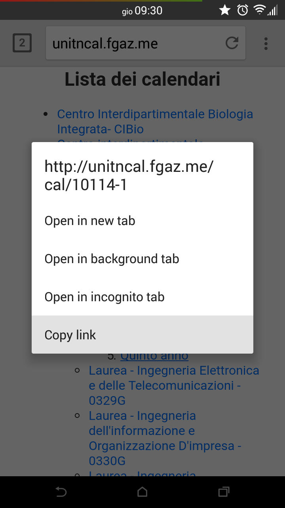
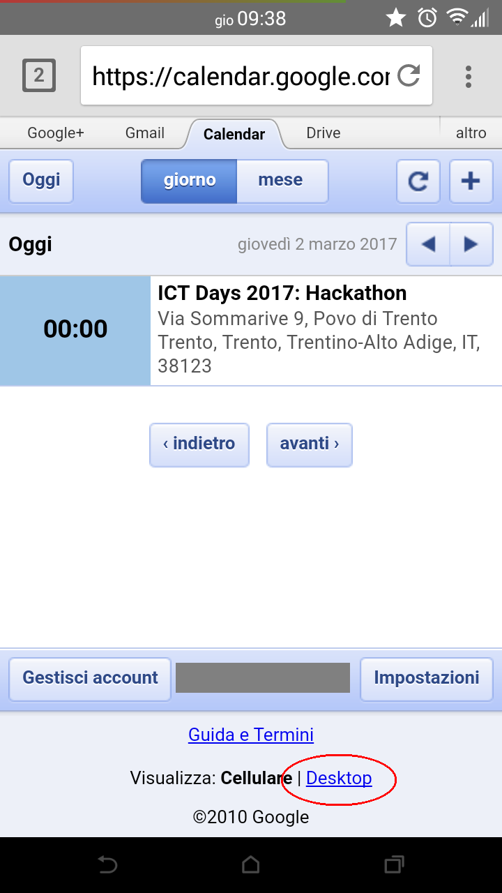
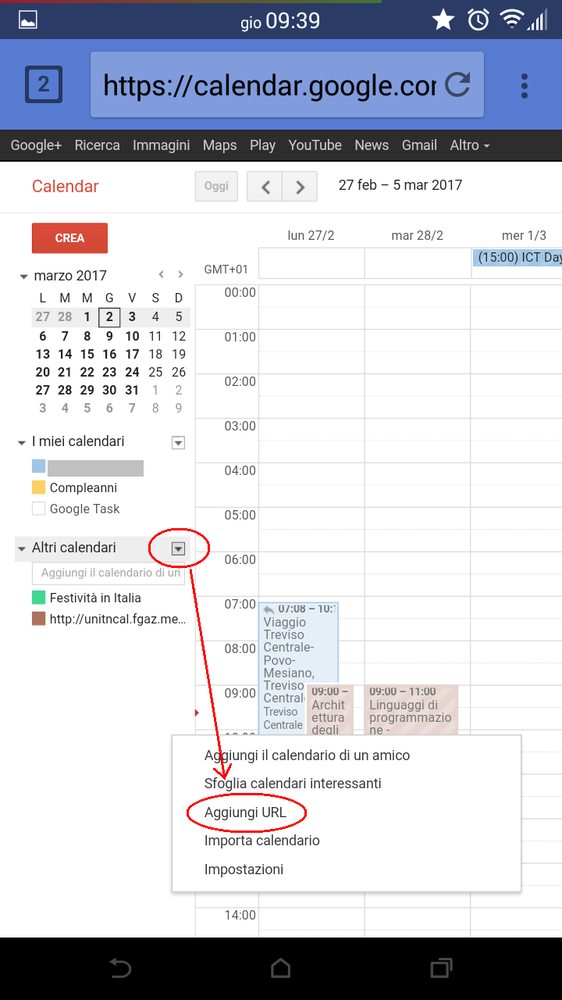
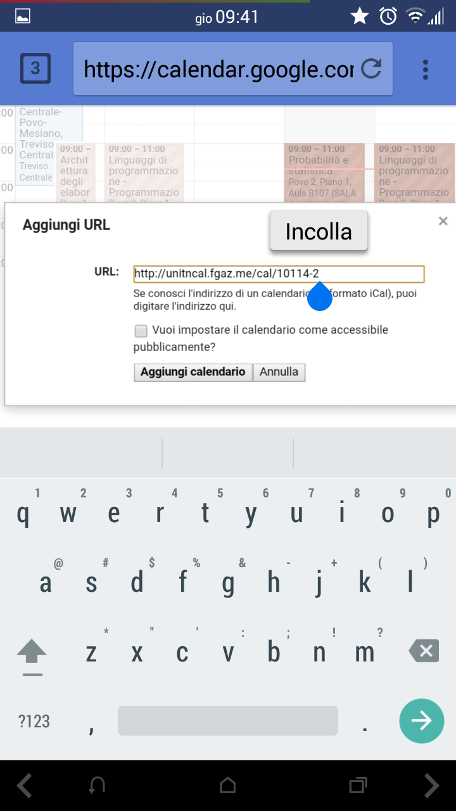
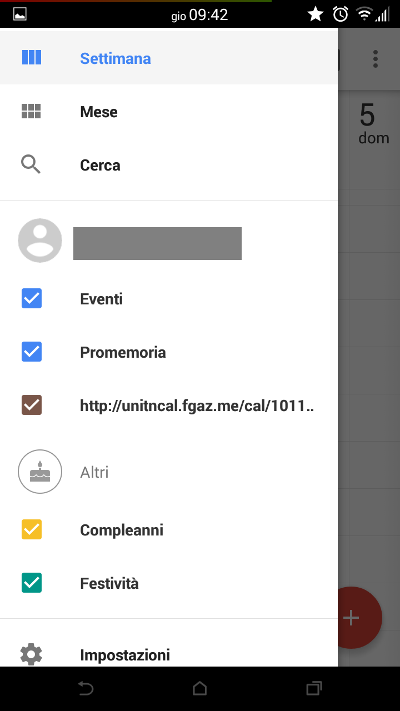
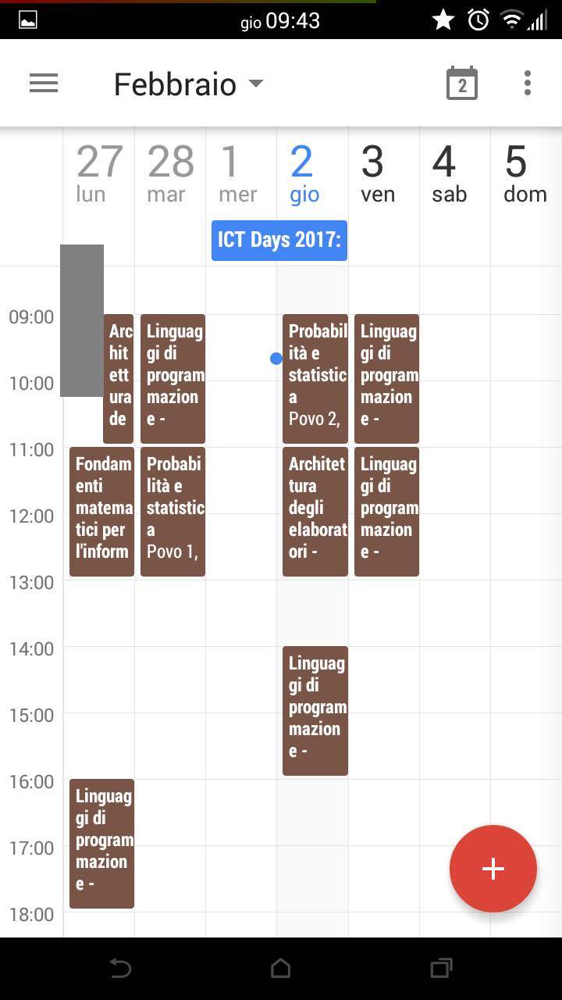
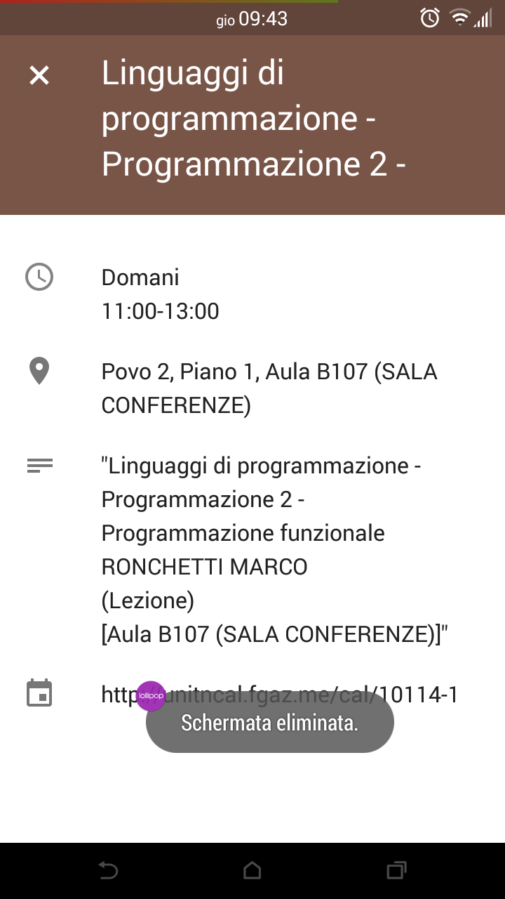

Android
Se avete uno smartphone Android, molto probabilmente avrete anche l'account Google sincronizzato. Per esempio, se installate applicazioni dal Play Store o utilizzate Gmail, sicuramente lo è.
Android (con account Google sicronizzato)
Procedura online sul sito di Google (da fare la prima volta che si importa il calendario):
- Copiare il link del calendario come descritto sopra;
- Aprire il browser che si preferisce (Chrome, Firefox, eccetera) e collegarsi alla pagina: google.com/calendar;
- Fare il login su Google se necessario;
- se appare l'interfaccia mobile, cliccare in fondo alla pagina sul link "Visualizza: Desktop";
- Sulla barra che vi si presenta a sinistra, sotto la voce Altri calendari, aprire il menu a tendina e cliccare su Aggiungi URL;
- Incollare il link (tasto destro => Incolla) e cliccare su Aggiungi calendario;
- Da smartphone, attivare la sincronizzazione del calendario:
- dalla propria applicazione calendario selezionare Calendari da visualizzare;
- selezionare e attivare il link che inizia per http://unitn.fgaz.me/cal/....
- Ritornare al calendario: il gioco è fatto!
Screenshots:
|  |
|  |
|  |
|  |
|  |
|  |
|  |
Android (senza account Google sincronizzato)
ICSdroid è una semplicissima applicazione che ci permette di sincronizzare il calendario fornendo un URL. Procedura mediante ICSdroid:
- Copiare il link del calendario come descritto sopra;
- Collegati a questa pagina e clicca su Download APK, o se preferisci scarica direttamente l'apk (in alternativa l'applicazione è disponibile sul play store a un piccolo prezzo);
- Abilitare l'installazione di applicazioni da fonti sconosciute (Impostazioni => Sicurezza => Origini sconosciute);
- Installare l'apk scaricato e aprire l'applicazione;
- Aggiungi un calendario cliccando su +;
- Incolla l'URL e dai la conferma;
- Controlla sull'applicazione Calendario se la sincronizzazione è attiva;
- Apri il calendario: il gioco è fatto!